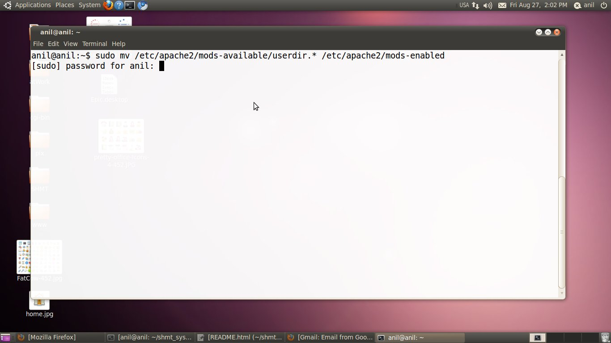
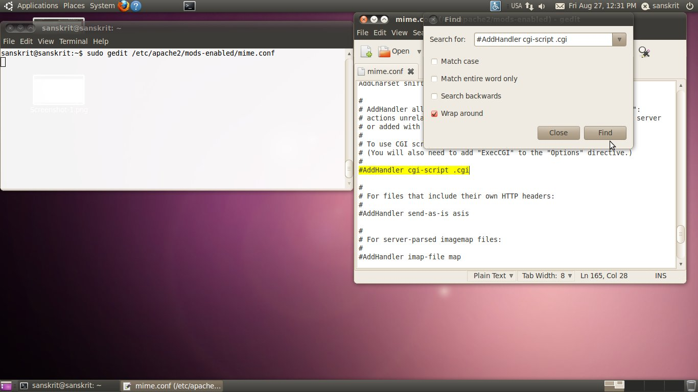
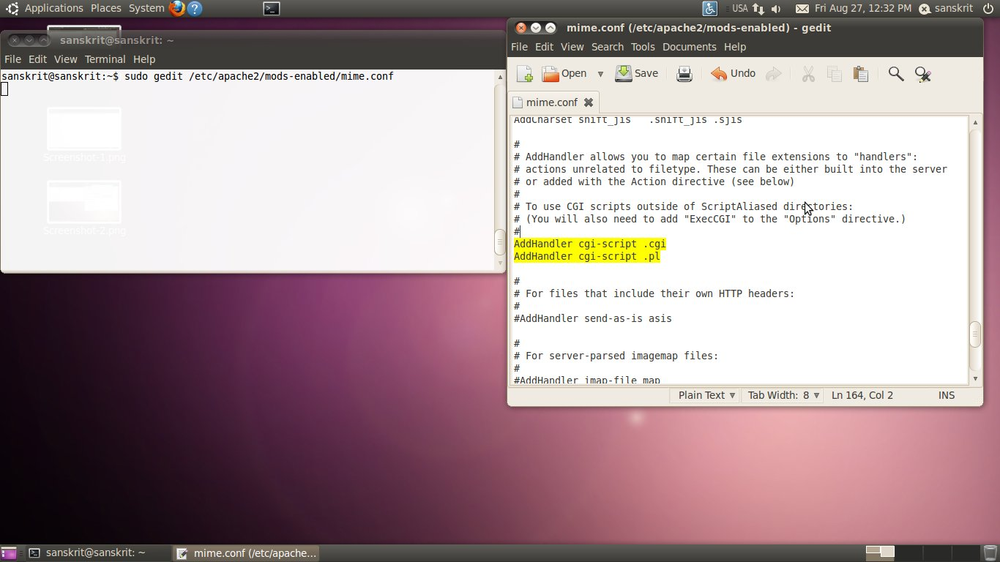
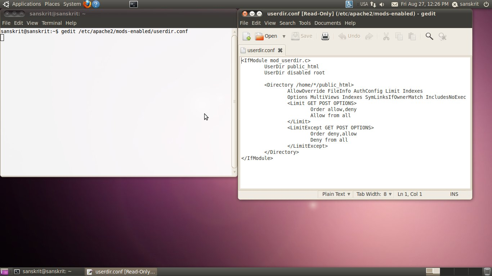
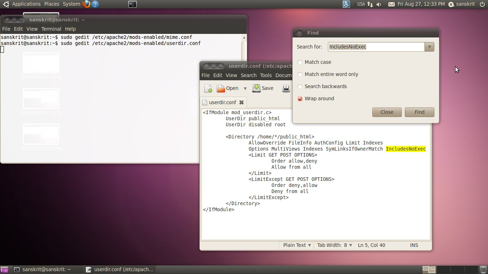
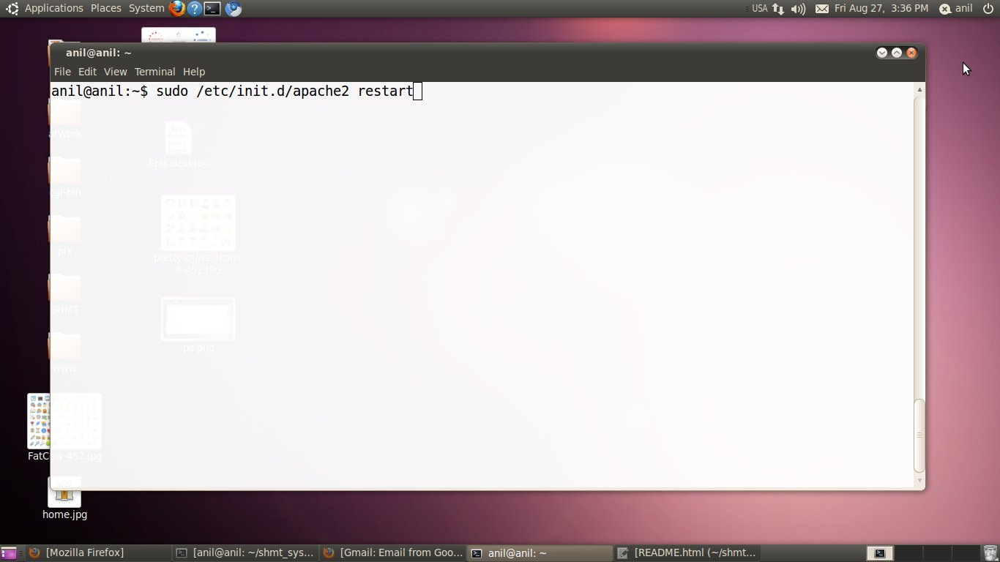
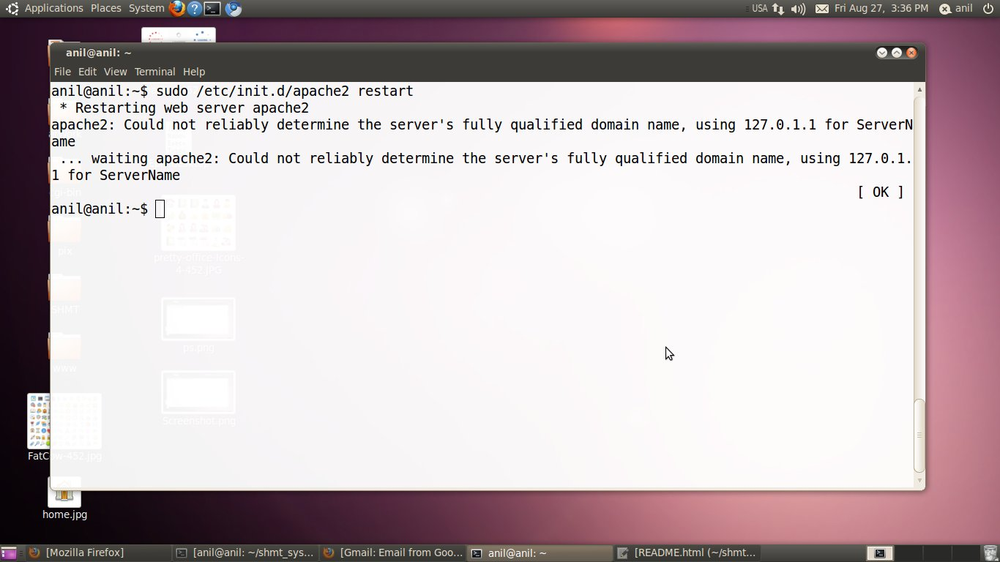

Second Step:
In this step, We will see how to enable public_html. Please follow the instructions which are given below:
-
Open Terminal from Application -> Accessories -> Terminel

-
Type the following commands into bash:
sudo mv /etc/apache2/mods-available/userdir.* /etc/apache2/mods-enabled/ It may ask the password for authentication. Just enter the password. See the screenshot below.
 -
Open the mime.conf file by typing the following commands into bash: sudo gedit /ete/apache2/mods-enabled/mime.conf and remove # symbol from begining of the following line #AddHandler cgi-script .cgi and also add the following newline AddHandler cgi-script .pl . See the screenshot below.


-
Open the userdir.conf file by typing the following commands into bash: sudo gedit /etc/apache2/mods-enabled/userdir.conf and find IncludesNoExec text and replace it with ExecCGI See the screenshot below.

 -
Now, to activate public_html support. Restart apache server by typing following commands into bash sudo /etc/init.d/apache2 restart See the pictures below.

